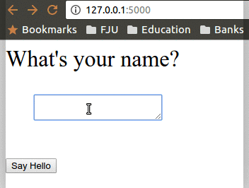

import numpy as np
import re
from nltk.corpus import stopwords
from nltk.stem import PorterStemmer
stop = stopwords.words('english')
porter = PorterStemmer()
def tokenizer(text):
text = re.sub('<[^>]*>', '', text)
emoticons = re.findall('(?::|;|=)(?:-)?(?:\)|\(|D|P)', text.lower())
text = re.sub('[\W]+', ' ', text.lower()) + ' '.join(emoticons).replace('-', '')
tokenized = [w for w in text.split() if w not in stop]
return tokenized
def stream_docs(path):
with open(path, 'r') as csv:
next(csv) # skip header
for line in csv:
text, label = line[:-3], int(line[-2])
yield text, label
next(stream_docs(path='./movie_data.csv'))
('"In 1974, the teenager Martha Moxley (Maggie Grace) moves to the high-class area of Belle Haven, Greenwich, Connecticut. On the Mischief Night, eve of Halloween, she was murdered in the backyard of her house and her murder remained unsolved. Twenty-two years later, the writer Mark Fuhrman (Christopher Meloni), who is a former LA detective that has fallen in disgrace for perjury in O.J. Simpson trial and moved to Idaho, decides to investigate the case with his partner Stephen Weeks (Andrew Mitchell) with the purpose of writing a book. The locals squirm and do not welcome them, but with the support of the retired detective Steve Carroll (Robert Forster) that was in charge of the investigation in the 70\'s, they discover the criminal and a net of power and money to cover the murder.
""Murder in Greenwich"" is a good TV movie, with the true story of a murder of a fifteen years old girl that was committed by a wealthy teenager whose mother was a Kennedy. The powerful and rich family used their influence to cover the murder for more than twenty years. However, a snoopy detective and convicted perjurer in disgrace was able to disclose how the hideous crime was committed. The screenplay shows the investigation of Mark and the last days of Martha in parallel, but there is a lack of the emotion in the dramatization. My vote is seven.
Title (Brazil): Not Available"',
1)
def get_minibatch(doc_stream, size):
docs, y = [], []
try:
for _ in range(size):
text, label = next(doc_stream)
docs.append(text)
y.append(label)
except StopIteration:
return None, None
return docs, y
from sklearn.feature_extraction.text import HashingVectorizer
from sklearn.linear_model import SGDClassifier
vect = HashingVectorizer(decode_error='ignore',
n_features=2**21,
preprocessor=None,
tokenizer=tokenizer)
clf = SGDClassifier(loss='log', random_state=1, n_iter=1)
doc_stream = stream_docs(path='./movie_data.csv')
import pyprind
pbar = pyprind.ProgBar(45)
classes = np.array([0, 1])
for _ in range(45):
X_train, y_train = get_minibatch(doc_stream, size=1000)
if not X_train:
break
X_train = vect.transform(X_train)
clf.partial_fit(X_train, y_train, classes=classes)
pbar.update()
0% 100%
[##############################] | ETA: 00:00:00
Total time elapsed: 00:01:39
X_test, y_test = get_minibatch(doc_stream, size=5000)
X_test = vect.transform(X_test)
print('Accuracy: %.3f' % clf.score(X_test, y_test))
Accuracy: 0.867
clf = clf.partial_fit(X_test, y_test)
Don't need to retraining model
Model persisternce
Increase performance
Cost reduction of cloud computing
import pickle
import os
dest = os.path.join('movieclassifier', 'pkl_objects')
if not os.path.exists(dest):
os.makedirs(dest)
pickle.dump(stop, open(os.path.join(dest, 'stopwords.pkl'), 'wb'), protocol=4)
pickle.dump(clf, open(os.path.join(dest, 'classifier.pkl'), 'wb'), protocol=4)
it create the 2 pickle files (stopwords.pkl and classifier.pkl) to movieclassifier/pkl_objects directory
from sklearn.feature_extraction.text import HashingVectorizer
import re
import os
import pickle
cur_dir = os.path.dirname(__file__)
stop = pickle.load(open(
os.path.join(cur_dir,
'pkl_objects',
'stopwords.pkl'), 'rb'))
def tokenizer(text):
text = re.sub('<[^>]*>', '', text)
emoticons = re.findall('(?::|;|=)(?:-)?(?:\)|\(|D|P)',
text.lower())
text = re.sub('[\W]+', ' ', text.lower()) \
+ ' '.join(emoticons).replace('-', '')
tokenized = [w for w in text.split() if w not in stop]
return tokenized
vect = HashingVectorizer(decode_error='ignore',
n_features=2**21,
preprocessor=None,
tokenizer=tokenizer)
Create a file and paste this code, then save it as vectorizer.py to movieclassifier directory
import os
os.chdir('movieclassifier')
import pickle
import re
import os
from vectorizer import vect
clf = pickle.load(open(os.path.join('pkl_objects', 'classifier.pkl'), 'rb'))
import numpy as np
label = {0:'negative', 1:'positive'}
example = ['I love this movie']
X = vect.transform(example)
print('Prediction: %s\nProbability: %.2f%%' %\
(label[clf.predict(X)[0]], clf.predict_proba(X).max()*100))
Prediction: positive
Probability: 82.52%
import sqlite3
import os
if os.path.exists('reviews.sqlite'):
os.remove('reviews.sqlite')
conn = sqlite3.connect('reviews.sqlite')
c = conn.cursor()
c.execute('CREATE TABLE review_db (review TEXT, sentiment INTEGER, date TEXT)')
example1 = 'I love this movie'
c.execute("INSERT INTO review_db (review, sentiment, date) VALUES (?, ?, DATETIME('now'))", (example1, 1))
example2 = 'I disliked this movie'
c.execute("INSERT INTO review_db (review, sentiment, date) VALUES (?, ?, DATETIME('now'))", (example2, 0))
conn.commit()
conn.close()
Create a database named reviews and create review_db tables. Then insert 2 example records.
conn = sqlite3.connect('reviews.sqlite')
c = conn.cursor()
c.execute("SELECT * FROM review_db WHERE date BETWEEN '2017-01-01 10:10:10' AND DATETIME('now')")
results = c.fetchall()
conn.close()
Connect to reviews.sqlite and execute query syntax
print(results)
Print the results
[('I love this movie', 1, '2016-09-30 01:31:01'), ('I disliked this movie', 0, '2017-01-1 01:31:01')]
pip install flask
mkdir 1st_flask_app_1/templates
echo '' > 1st_flask_app_1/app.py
echo '' > 1st_flask_app_1/templates/first_app.html
// app.py
from flask import Flask, render_template
app = Flask(__name__)
@app.route('/')
def index():
return render_template('first_app.html')
if __name__ == '__main__':
app.run(debug=True)
// first_app.html
<!doctype html>
<html>
<head>
<title>First app</title>
</head>
<body>
<div>
Hi, this is my first Flask web app!
</div>
</body>
</html>
$ python3 app.py
* Running on http://127.0.0.1:5000/ (Press CTRL+C to quit)
* Restarting with stat
* Debugger is active!
* Debugger pin code: 308-191-720
Run the http server and show demo page
$ pip install wtforms
cp -R 1st_flask_app_1 1st_flask_app_2
mkdir 1st_flask_app_1/static
echo '' > 1st_flask_app_1/static/style.css
echo '' > 1st_flask_app_1/templates/_formhelpers.html
echo '' > 1st_flask_app_1/templates/hello.html
// app.py
from flask import Flask, render_template, request
from wtforms import Form, TextAreaField, validators
app = Flask(__name__)
class HelloForm(Form):
sayhello = TextAreaField('',[validators.DataRequired()])
@app.route('/')
def index():
form = HelloForm(request.form)
return render_template('first_app.html', form=form)
@app.route('/hello', methods=['POST'])
def hello():
form = HelloForm(request.form)
if request.method == 'POST' and form.validate():
name = request.form['sayhello']
return render_template('hello.html', name=name)
return render_template('first_app.html', form=form)
if __name__ == '__main__':
app.run(debug=True)
Edit app.py file
body {
font-size: 2em;
}
Edit style.css file
// _formhelpers.html
{% macro render_field(field) %}
<dt>{{ field.label }}
<dd>{{ field(**kwargs)|safe }}
{% if field.errors %}
<ul class=errors>
{% for error in field.errors %}
<li>{{ error }}</li>
{% endfor %}
</ul>
{% endif %}
</dd>
</dt>
{% endmacro %}
Edit _formhelpers.html file
// first_app.html
<!doctype html>
<html>
<head>
<title>First app</title>
<link rel="stylesheet" href="{{ url_for('static', filename='style.css') }}">
</head>
<body>
{% from "_formhelpers.html" import render_field %}
<div>What's your name?</div>
<form method=post action="/hello">
<dl>
{{ render_field(form.sayhello) }}
</dl>
<input type=submit value='Say Hello' name='submit_btn'>
</form>
</body>
</html>
Edit first_app.html file
// hello.html
<!doctype html>
<html>
<head>
<title>First app</title>
<link rel="stylesheet" href="{{ url_for('static', filename='style.css') }}">
</head>
<body>
<div>Hello {{ name }}</div>
</body>
</html>
Edit hello.html file

// app.py
from flask import Flask, render_template, request
from wtforms import Form, TextAreaField, validators
import pickle
import sqlite3
import os
import numpy as np
# import HashingVectorizer from local dir
from vectorizer import vect
app = Flask(__name__)
######## Preparing the Classifier
cur_dir = os.path.dirname(__file__)
clf = pickle.load(open(os.path.join(cur_dir,
'pkl_objects',
'classifier.pkl'), 'rb'))
db = os.path.join(cur_dir, 'reviews.sqlite')
def classify(document):
label = {0: 'negative', 1: 'positive'}
X = vect.transform([document])
y = clf.predict(X)[0]
proba = np.max(clf.predict_proba(X))
return label[y], proba
def train(document, y):
X = vect.transform([document])
clf.partial_fit(X, [y])
def sqlite_entry(path, document, y):
conn = sqlite3.connect(path)
c = conn.cursor()
c.execute("INSERT INTO review_db (review, sentiment, date)"\
" VALUES (?, ?, DATETIME('now'))", (document, y))
conn.commit()
conn.close()
######## Flask
class ReviewForm(Form):
moviereview = TextAreaField('',
[validators.DataRequired(),
validators.length(min=15)])
@app.route('/')
def index():
form = ReviewForm(request.form)
return render_template('reviewform.html', form=form)
@app.route('/results', methods=['POST'])
def results():
form = ReviewForm(request.form)
if request.method == 'POST' and form.validate():
review = request.form['moviereview']
y, proba = classify(review)
return render_template('results.html',
content=review,
prediction=y,
probability=round(proba*100, 2))
return render_template('reviewform.html', form=form)
@app.route('/thanks', methods=['POST'])
def feedback():
feedback = request.form['feedback_button']
review = request.form['review']
prediction = request.form['prediction']
inv_label = {'negative': 0, 'positive': 1}
y = inv_label[prediction]
if feedback == 'Incorrect':
y = int(not(y))
train(review, y)
sqlite_entry(db, review, y)
return render_template('thanks.html')
if __name__ == '__main__':
app.run(debug=True)
Import python model and object, load the model
// reviewform.html
<!doctype html>
<html>
<head>
<title>Movie Classification</title>
<link rel="stylesheet" href="{{ url_for('static', filename='style.css') }}">
</head>
<body>
<h2>Please enter your movie review:</h2>
{% from "_formhelpers.html" import render_field %}
<form method=post action="/results">
<dl>
{{ render_field(form.moviereview, cols='30', rows='10') }}
</dl>
<div>
<input type=submit value='Submit review' name='submit_btn'>
</div>
</form>
</body>
</html>
Edit reviewform.html file
// results.html
<!doctype html>
<html>
<head>
<title>Movie Classification</title>
<link rel="stylesheet" href="{{ url_for('static', filename='style.css') }}">
</head>
<body>
<h3>Your movie review:</h3>
<div>{{ content }}</div>
<h3>Prediction:</h3>
<div>This movie review is <strong>{{ prediction }}</strong>
(probability: {{ probability }}%).</div>
<div id='button'>
<form action="/thanks" method="post">
<input type=submit value='Correct' name='feedback_button'>
<input type=submit value='Incorrect' name='feedback_button'>
<input type=hidden value='{{ prediction }}' name='prediction'>
<input type=hidden value='{{ content }}' name='review'>
</form>
</div>
<div id='button'>
<form action="/">
<input type=submit value='Submit another review'>
</form>
</div>
</body>
</html>
Edit results.html file
// thanks.html
<!doctype html>
<html>
<head>
<title>Movie Classification</title>
<link rel="stylesheet" href="{{ url_for('static', filename='style.css') }}">
</head>
<body>
<h3>Thank you for your feedback!</h3>
<div id='button'>
<form action="/">
<input type=submit value='Submit another review'>
</form>
</div>
</body>
</html>
Edit thanks.html file
// update.py
import pickle
import sqlite3
import numpy as np
import os
# import HashingVectorizer from local dir
from vectorizer import vect
def update_model(db_path, model, batch_size=10000):
conn = sqlite3.connect(db_path)
c = conn.cursor()
c.execute('SELECT * from review_db')
results = c.fetchmany(batch_size)
while results:
data = np.array(results)
X = data[:, 0]
y = data[:, 1].astype(int)
classes = np.array([0, 1])
X_train = vect.transform(X)
model.partial_fit(X_train, y, classes=classes)
results = c.fetchmany(batch_size)
conn.close()
return model
cur_dir = os.path.dirname(__file__)
clf = pickle.load(open(os.path.join(cur_dir,
'pkl_objects',
'classifier.pkl'), 'rb'))
db = os.path.join(cur_dir, 'reviews.sqlite')
clf = update_model(db_path=db, model=clf, batch_size=10000)
# Uncomment the following lines if you are sure that
# you want to update your classifier.pkl file
# permanently.
# pickle.dump(clf, open(os.path.join(cur_dir,
# 'pkl_objects', 'classifier.pkl'), 'wb')
# , protocol=4)
// app.py
import update fuction from update
...
if __name__ == '__main__':
update_model(db_path=db, model=clf, batch_size=10000)
...